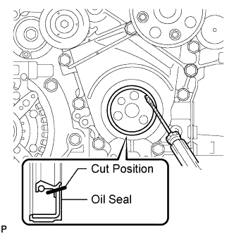

FRONT CRANKSHAFT OIL SEAL > REMOVAL |
| 1. REMOVE RADIATOR ASSEMBLY |
Remove the radiator (Click here).
| 2. REMOVE CRANKSHAFT PULLEY SUB-ASSEMBLY |
 |
Install the 2 bolts to the bolt holes of the crankshaft rear side.
Using a bar, turn the crankshaft until the crankshaft pulley service hole is a little to the left of bottom dead center.
Install a 14 mm x 1.5 pitch service bolt with a length of 70 mm or more to the crankshaft pulley service hole, and hold the crankshaft using the timing chain cover protrusion.
Remove the 3 bolts and crankshaft pulley.
| 3. REMOVE FRONT CRANKSHAFT OIL SEAL |
 |
Using a knife, cut off the lip of the oil seal.
Using a screwdriver, pry out the oil seal.